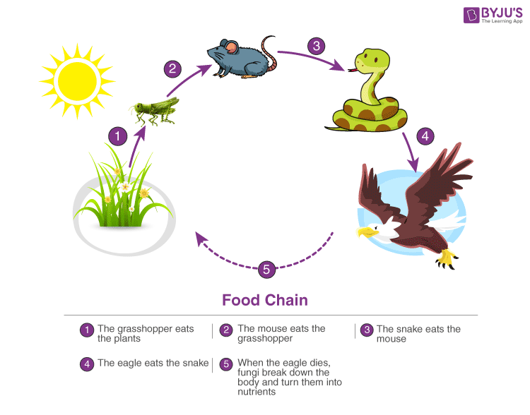

×
semester 1
Chemistry Mathematics 1 BEE C programming Englishsemester 2
OOps Mathematics Env Science Data Structuresemester-2
Environmental awareness means exactly what you may think: an awareness around the natural environment and the choices that either promote its well-being or cause it more harm. It is also the awareness that the earth is in need of protection for its survival. Along with this, the term “environmentalism” is an ideology that humans are responsible to protect and preserve the environment from human-caused afflictions. As previously stated, human-made choices are the number one reason why the planet is becoming sicker every day. Environmentalism on a large scale is one of the best ways to combat the devastating consequences of these human decisions and help the planet’s health take a complete 180 degree in the other direction.
To understand the multidisciplinary nature of environmental studies, we must first comprehend the literal definition of the term multidisciplinary. The phrase is made up of two words: multi and disciplinary. To begin, we define the term disciplinary. Disciplined research in a certain subject is what the term “disciplinary” refers to. Multidisciplinary, on the other hand, refers to the combination of more than one discipline or topic of study. It defines multi-sect oral and multi-dimensional research in a variety of disciplines. For example, a multidisciplinary course of study is one in which you study a variety of disciplines such as Science, Social Science, Mathematics, English, and so on.
How is Environmental Studies Multidisciplinary in Nature?Encompassing the elements of Physics, Chemistry, Medical Science, Agriculture, Geography, and Biology, Environmental Studies is a vast field of study. Not only restricted to environmental conservation and management of resources, but it also lays emphasis on understanding:
Increasing population,and poverty have generated pressure on the natural resources and lead to a degradation of the environment. TO PREVENT THE ENVIRONMENT FROM FURTHER DEGRADATION, the Supreme Court has ordered and initiated environmental protection awareness through government and non-government agencies to take part in protecting our environment. Environmental pollution cannot prevented by laws alone. Public participation is equally important with regard to environmental protection. Environmental Education (EE) is a process of learning by giving an overall perspective of knowledge and awareness of the environment. It sensitizes the society about environmental issues and challenges interested individuals to develop skills and expertise thereby providing appropriate solutions. Climate change, loss of biodiversity, declining fisheries, ozone layer depletion, illegal trade of endangered species, destruction of habitats, land degradation, depleting ground water supplies, introduction of alien species, environmental pollution, solid waste disposal, storm water and sewage disposal pose a serious threat to ecosystems in forest, rural, urban and marine ecosystems. Both formal and informal education on the environment will give the interested individual the knowledge, values, skills and tools needed to face the environmental challenges on a local and global level
Environment is derived from the French word Environner, which mean encircle or surrounding. Environment is a complex of many variables, which surrounds man as well as the living organisms. Environmental studies describe the interrelationships among organisms, the environment and all the factors, which influence life on earth, including atmospheric conditions, food chains, the water cycle, etc. It is a basic science about our earth and its daily activities, and therefore, this science is important for one and all.
Environmental studies discipline has multiple and multilevel scopes. This study is important and necessary not only for children but also for everyone.
Environmental study is based upon a comprehensive view of various environmental systems. It aims to make the citizens competent to do scientific work and to find out practical solutions to current environmental problems. The citizens acquire the ability to analyze the environmental parameters like the aquatic, terrestrial and atmospheric systems and their interactions with the biosphere and astrosphere.
importantEcosystem Definition “An ecosystem is defined as a community of life forms in concurrence with non-living components, interacting with each other.”
What is an Ecosystem?The ecosystem is the structural and functional unit of ecology where the living organisms interact with each other and the surrounding environment. In other words, an ecosystem is a chain of interactions between organisms and their environment. The term “Ecosystem” was first coined by A.G.Tansley, an English botanist, in 1935. Read on to explore the structure, components, types and functions of the ecosystem in the ecosystem notes provided below.
Types of EcosystemAn ecosystem can be as small as an oasis in a desert, or as big as an ocean, spanning thousands of miles.
There are two types of ecosystem:Terrestrial ecosystems are exclusively land-based ecosystems. There are different types of terrestrial ecosystems distributed around various geological zones.
A forest ecosystem consists of several plants, animals and microorganisms that live in coordination with the abiotic factors of the environment. Forests help in maintaining the temperature of the earth and are the major carbon sink.
Grassland EcosystemIn a grassland ecosystem, the vegetation is dominated by grasses and herbs. Temperate grasslands, savanna grasslands are some of the examples of grassland ecosystems.
Tundra ecosystems are devoid of trees and are found in cold climates or where rainfall is scarce. These are covered with snow for most of the year. The ecosystem in the Arctic or mountain tops is tundra type.
Deserts are found throughout the world. These are regions with very little rainfall. The days are hot and the nights are cold.
Aquatic ecosystems are ecosystems present in a body of water. These can be further divided into two types, namely:
The structure of an ecosystem is characterized by the organization of both biotic and abiotic components. This includes the distribution of energy in our environment. It also includes the climatic conditions prevailing in that particular environment. The structure of an ecosystem can be split into two main components, namely:
The biotic and abiotic components are interrelated in an ecosystem. It is an open system where the energy and components can flow throughout the boundaries.
Structure of Ecosystem highlighting the biotic and abiotic factors.
Abiotic components are the non-living component of an ecosystem. It includes air, water, soil, minerals, sunlight, temperature, nutrients, wind, altitude, turbidity, etc.
The functions of the ecosystem are as follows:
So the functional units of an ecosystem or functional components that work together in an ecosystem are:
The sun is the ultimate source of energy on earth. It provides the energy required for all plant life. The plants utilize this energy for the process of photosynthesis, which is used to synthesize their food. During this biological process, light energy is converted into chemical energy and is passed on through successive levels. The flow of energy from a producer, to a consumer and eventually, to an apex predator or a detritivore is called the food chain. Dead and decaying matter, along with organic debris, is broken down into its constituents by scavengers. The reducers then absorb these constituents. After gaining the energy, the reducers liberate molecules to the environment, which can be utilized again by the producers.
 A classic example of a food chain in an ecosystem.An ecological pyramid is the graphical representation of the number, energy, and biomass of the successive trophic levels of an ecosystem. Charles Elton was the first ecologist to describe the ecological pyramid and its principals in 1927. The biomass, number, and energy of organisms ranging from the producer level to the consumer level are represented in the form of a pyramid; hence, it is known as the ecological pyramid. The base of the ecological pyramid comprises the producers, followed by primary and secondary consumers. The tertiary consumers hold the apex. In some food chains, the quaternary consumers are at the very apex of the food chain. The producers generally outnumber the primary consumers and similarly, the primary consumers outnumber the secondary consumers. And lastly, apex predators also follow the same trend as the other consumers; wherein, their numbers are considerably lower than the secondary consumers. For example, Grasshoppers feed on crops such as cotton and wheat, which are plentiful. These grasshoppers are then preyed upon by common mice, which are comparatively less in number. The mice are preyed upon by snakes such as cobras. Snakes are ultimately preyed on by apex predators such as the brown snake eagle.
Food web is a network of interconnected food chains. It comprises all the food chains within a single ecosystem. It helps in understanding that plants lay the foundation of all the food chains. In a marine environment, phytoplankton forms the primary producer.
Ans-The ecosystem is the community of living organisms in conjunction with non-living components of their environment, interacting as a system.
Ans-The four main components of an ecosystem are:
Ans-We live in a terrestrial ecosystem. This is the ecosystem where organisms interact on landforms. Examples of terrestrial ecosystems include tundra, taigas, and tropical rainforests. deserts, grasslands and temperate deciduous forests also constitute terrestrial ecosystems.
Ans-The structure of the ecosystem includes the organisms and physical features of the environment, including the amount and distribution of nutrients in a particular habitat. It also provides information regarding the climatic conditions of that area.
Ans-The largest ecosystem in the world is the aquatic ecosystem. It comprises freshwater and marine ecosystems. It constitutes 70% of the surface of the earth.
Ans-The ecosystem is the functional unit of the environment system. The abiotic components provide the matrix for the synthesis of organic components. This process involves the exchange of energy.
Ans-A good ecosystem consists of native plants and animal species interacting with each other and the environment. A healthy ecosystem has an energy source and the decomposers that break down dead plants and animal matter, returning essential nutrients to the soil.
Ans-The non-living things in an ecosystem include air, wind, water, rocks, soil, temperature and sunlight. These are known as the abiotic factors of an ecosystem.